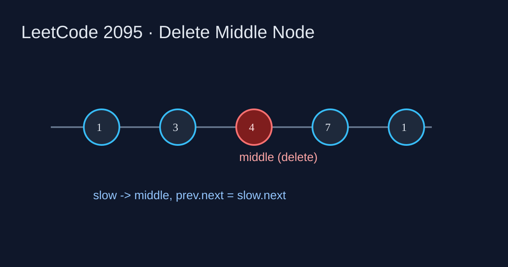

LeetCode 2095: Delete the Middle Node of a Linked List (Fast/Slow Pointers)
LeetCode 2095Linked ListTwo PointersToday we solve LeetCode 2095 - Delete the Middle Node of a Linked List.
Source: https://leetcode.com/problems/delete-the-middle-node-of-a-linked-list/

English
Problem Summary
Given the head of a singly linked list, delete the middle node and return the new head. For length n, the middle is index ⌊n/2⌋ (0-indexed). If there is only one node, return null.
Key Insight
Use fast/slow pointers: when fast moves 2 steps and slow moves 1, slow lands on the middle when fast reaches the end. Track prev of slow so we can bypass middle via prev.next = slow.next.
Brute Force and Limitations
Two-pass counting works: first pass gets length, second pass walks to middle predecessor and deletes. It is valid but less elegant than one-pass two-pointers.
Optimal Algorithm Steps
1) Handle single-node list, return null.
2) Initialize slow=head, fast=head, prev=null.
3) While fast and fast.next exist, advance prev=slow, slow=slow.next, fast=fast.next.next.
4) Delete middle by prev.next = slow.next and return head.
Complexity Analysis
Time: O(n).
Space: O(1).
Common Pitfalls
- Forgetting the length-1 case.
- Not storing prev, then cannot unlink middle in singly list.
- Wrong loop condition causing off-by-one middle.
Reference Implementations (Java / Go / C++ / Python / JavaScript)
class Solution {
public ListNode deleteMiddle(ListNode head) {
if (head == null || head.next == null) return null;
ListNode slow = head, fast = head, prev = null;
while (fast != null && fast.next != null) {
prev = slow;
slow = slow.next;
fast = fast.next.next;
}
prev.next = slow.next;
return head;
}
}func deleteMiddle(head *ListNode) *ListNode {
if head == nil || head.Next == nil { return nil }
slow, fast := head, head
var prev *ListNode
for fast != nil && fast.Next != nil {
prev = slow
slow = slow.Next
fast = fast.Next.Next
}
prev.Next = slow.Next
return head
}class Solution {
public:
ListNode* deleteMiddle(ListNode* head) {
if (!head || !head->next) return nullptr;
ListNode *slow = head, *fast = head, *prev = nullptr;
while (fast && fast->next) {
prev = slow;
slow = slow->next;
fast = fast->next->next;
}
prev->next = slow->next;
return head;
}
};class Solution:
def deleteMiddle(self, head: Optional[ListNode]) -> Optional[ListNode]:
if not head or not head.next:
return None
slow = fast = head
prev = None
while fast and fast.next:
prev = slow
slow = slow.next
fast = fast.next.next
prev.next = slow.next
return headvar deleteMiddle = function(head) {
if (!head || !head.next) return null;
let slow = head, fast = head, prev = null;
while (fast && fast.next) {
prev = slow;
slow = slow.next;
fast = fast.next.next;
}
prev.next = slow.next;
return head;
};中文
题目概述
给定单链表头结点，删除中间节点并返回头结点。长度为 n 时，中间节点是 0 下标的 ⌊n/2⌋。若只有一个节点，返回 null。
核心思路
快慢指针同起点：fast 每次走 2 步，slow 每次走 1 步。循环结束时 slow 正好在中间节点。再用 prev 记录 slow 前驱，执行 prev.next = slow.next 即可删除。
暴力解法与不足
也可以先遍历求长度，再走到中间前一个节点进行删除。逻辑可行，但需要两次遍历，不如快慢指针一趟直观。
最优算法步骤
1）处理单节点，直接返回 null。
2）初始化 slow=head、fast=head、prev=null。
3）当 fast 与 fast.next 存在时持续推进。
4）循环后执行 prev.next = slow.next，返回 head。
复杂度分析
时间复杂度：O(n)。
空间复杂度：O(1)。
常见陷阱
- 漏判长度为 1 的链表。
- 不保存前驱节点，导致无法在单链表中断链。
- 循环条件写错，删成了偏左或偏右节点。
多语言参考实现（Java / Go / C++ / Python / JavaScript）
class Solution {
public ListNode deleteMiddle(ListNode head) {
if (head == null || head.next == null) return null;
ListNode slow = head, fast = head, prev = null;
while (fast != null && fast.next != null) {
prev = slow;
slow = slow.next;
fast = fast.next.next;
}
prev.next = slow.next;
return head;
}
}func deleteMiddle(head *ListNode) *ListNode {
if head == nil || head.Next == nil { return nil }
slow, fast := head, head
var prev *ListNode
for fast != nil && fast.Next != nil {
prev = slow
slow = slow.Next
fast = fast.Next.Next
}
prev.Next = slow.Next
return head
}class Solution {
public:
ListNode* deleteMiddle(ListNode* head) {
if (!head || !head->next) return nullptr;
ListNode *slow = head, *fast = head, *prev = nullptr;
while (fast && fast->next) {
prev = slow;
slow = slow->next;
fast = fast->next->next;
}
prev->next = slow->next;
return head;
}
};class Solution:
def deleteMiddle(self, head: Optional[ListNode]) -> Optional[ListNode]:
if not head or not head.next:
return None
slow = fast = head
prev = None
while fast and fast.next:
prev = slow
slow = slow.next
fast = fast.next.next
prev.next = slow.next
return headvar deleteMiddle = function(head) {
if (!head || !head.next) return null;
let slow = head, fast = head, prev = null;
while (fast && fast.next) {
prev = slow;
slow = slow.next;
fast = fast.next.next;
}
prev.next = slow.next;
return head;
};
Comments